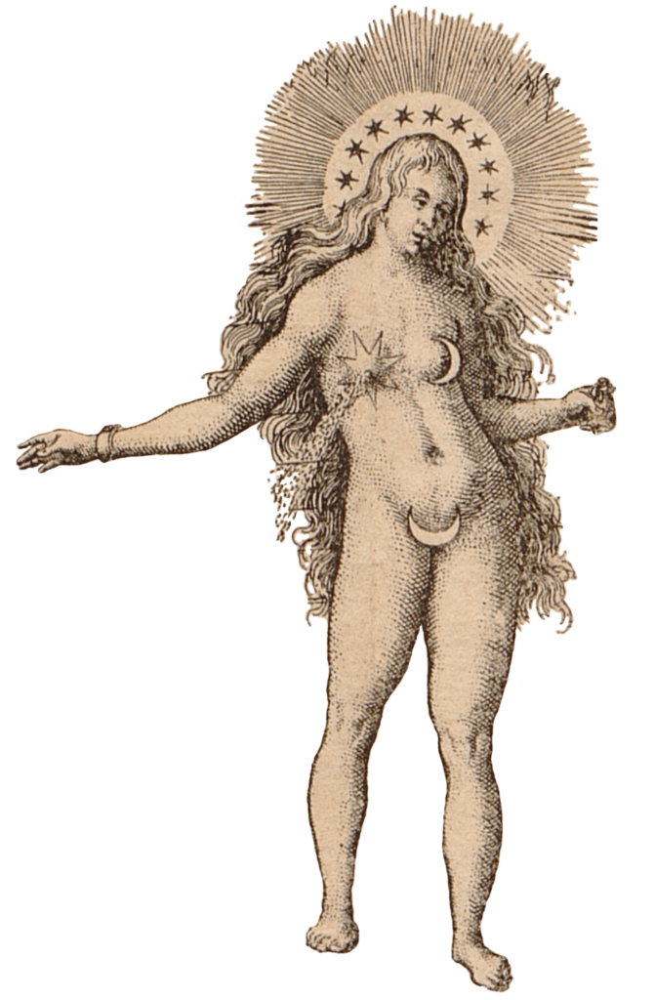
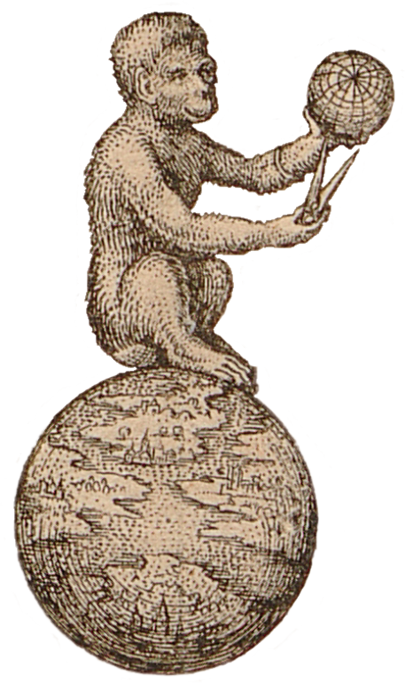

Virtuelle Ausstellung & Dynamische Wissensplattform
In einer außergewöhnlichen Konjunkturwelle brachten die Verlage von Johann Theodor de Bry und Lucas Jennis innerhalb nur weniger Jahre – ungefähr zwischen 1615 und 1630 – eine Vielfalt alchemistischer und alchemisch-spiritueller Druckschriften hervor. Der junge Matthäus Merian (1593-1650) bekam und nutzte die einmalige Gelegenheit, bis 1625 fast 20 Schriften der namhaftesten Verfechter der natürlichen Magie zu bebildern. Häufig ohne ein direktes ikonographisches Vorbild, gelang es dem Künstler, einem Paukenschlag vergleichbar, ausgeklügelte Bildsynthesen zu schaffen, die zwischen wissenschaftlich anmutendem Kreisschema und mimetischer Schilderung oszillieren. Durch Hinzufügung realistischer Landschaften gelang Merian die Betonung malerischer Elemente und die Annäherung der Buchillustration an die Malerei.

Nicht zufällig deckte sich diese intensive Produktionsphase mit der Hochphase der Beliebtheit derartiger Literatur in Europa und der überall anzutreffenden Suche nach dem Stein der Weisen. Schon damals hoben sich die hochwertigen Alchemica illustrata aus Frankfurt und Oppenheim von der Masse ab. Das Bild als Medium erhielt einen betonten – nicht minder umstrittenen – Sonderstatus als eigenständiges Mittel der Wissens- und Erkenntnisvermittlung. Innerhalb eines vergleichsweise kurzen Zeitfensters wurde die Ikonographie der Alchemie in einem bis dahin ungekannten Ausmaß ausdifferenziert. Die neu kreierten Bilderzyklen, Titel- und Einzelblätter bildeten aufgrund ihrer weitreichenden Rezeption bald einen wesentlichen Teil des europäischen Bildkanons der Alchemie. Bis heute fehlen die markanten Bilderfindungen in keinem Handbuch und auf keiner Website zur Alchemie, Hermetik oder Naturmagie (Magia naturalis). Sie sind ein fester Bestandteil des kulturellen Bildgedächtnisses, der in den letzten Jahren im Zuge interdisziplinärer Forschungen zur Alchemie und Naturmagie wieder verstärkt in den Fokus der Kunst- und Kulturwissenschaften gerückt ist. Nicht zuletzt haben die großen Ausstellungen zum Themenkreis der Alchemie und Kunst vom Mitteltalter bis in die Gegenwart in Los Angeles (Getty Research Institute), Düsseldorf (Museum Kunstpalast) oder Berlin (Staatliche Museen zu Berlin) zur weiteren Bekanntheit der Frankfurter Alchemica illustrata beigetragen.
Aus der Perspektive der Forschungsgeschichte rückt das Projekt am Kunstgeschichtlichen Institut der Goethe-Universität Frankfurt die thematisch verschiedenen Bilderfindungen, die häufig von Matthäus Merian d.Ä. stammen und in künstlerischer und intellektueller Qualität neue Maßstäbe setzten, in den Mittelpunkt eines explizit kunst- und kulturhistorischen Interesses und betrachtet die alchemische Bildgeschichte aus der Perspektive der Künstler. Es wird nach den spezifischen Bildstrategien für das Entwerfen der Titelkupfer und der allegorischen Bildfolgen, nach deren ikonographischen Vorbildern und ebenso nach der Bedeutung des Motivtransfers zwischen Antwerpen, Straßburg, Prag und Frankfurt gefragt. Insbesondere soll die Rolle des weitgereisten Merian als intimer Kenner der alchemischen Materie im Kontext der Frankfurter Verlage Johann Theodor de Bry – dessen Verlag aus religionspolitischen Gründen zeitweise teils nach Oppenheim verlegt werden musste – und Lucas Jennis näher untersucht werden. Dabei gilt es, den mehr oder weniger direkten Einfluss des Kupferstechers – und der bildenden Künstler im Allgemeinen – auf die ‚Bebilderung der Alchemie‘ zu bestimmen. Merians schöpferische Tätigkeit wird somit eingebunden in die Untersuchung des wissensgenerierenden Zusammenspiels von Verleger, Autor und Illustrator, das erstmals auch den elementar wichtigen Austausch mit Künstlerkollegen wie Balthasar Schwan, Eberhard Kieser oder Georg Keller näher betrachten wird. Außerdem gilt es, die bildnerische Innovationsleistung nicht ohne den Fundus der ganz unterschiedlichen Vorlagen in den Verlagen und in den enzyklopädischen Sammlungen der gut vernetzten ‚Liebhaber der Alchemie‘ – die sich selbst häufig auch als Kunstliebhaber bezeichneten – zu rekonstruieren.

Auf der dynamisch wachsenden Website sind, neben der gleichnamigen virtuellen Ausstellung mit sieben thematischen Räumen (I-VII), eine umfangreiche Bibliographie, Fachartikel und Abschlussarbeiten (Publikation in Vorbereitung) zu finden. Besucher der Website, die bislang nicht mit der Philosophie und Kulturgeschichte der frühneuzeitlichen Alchemie vertraut sind, können mit dem annotierten Intro: Alchemische Weltlandschaft beginnen oder in der virtuellen Ausstellung im Raum VI Materielle und spirituelle Kultur der Alchemie starten. Dort ist insbesondere die digitale Story zu David Teniers d.J. Gemälde Der Alchemist im Laboratorium zur Einführung geeignet.
Die Themenräume der virtuellen Ausstellung präsentieren verschiedene Alchemische Bildwelten und beleuchten dabei wesentliche Aspekte der Entwicklungsgeschichte der Bebilderung der Alchemie (in Frankfurt), etwa die Bedeutung der überregionalen, bis zu den Höfen reichenden Netzwerke und die Rolle der merianschen Porträtkunst als Kommunikationsmittel. Ein Seitenblick auf Bilder aus der Hexenwelt der Zaubereÿ und wundertätiger Einhörner verweist auf die Verbindung von Alchemie und Naturmagie mit anderen, sogenannten okkulten Strömungen, die insbesondere im enzyklopädischen Kontext der Kunst- und Wunderkammern auf ein schaufreudiges Publikum stießen. Dass praktische, materielle und spirituelle Kultur der Alchemie eine untrennbare Einheit bilden, die Alchemie verstärkt auch im christlichen Gewand auftrat, verdeutlicht die Präsentation verschiedener Artefakte, die sich im Laboratorium / Oratorium der Alchemiker fanden.
Die virtuellen Ausstellungsobjekte – Druckgraphiken, Bücher, Gemälde, Kunstkammerstücke, religiöse Objekte und alchemistische Instrumente – werden begleitet von Objekttexten mit Literaturangaben und Quellenverweisen, die aus der Feder von Studierenden, den Beteiligten im Merian-Projekt und eingeladenen internationalen Expert*innen stammen (Übersicht siehe hier). Zahlreiche Objekttexte sind bereits fertiggestellt, andere – bereits präsentierte, zur näheren Untersuchung vorgeschlagene Objekte oder Beobachtungen – warten noch auf Bearbeitung. Die verschriftlichten Ergebnisse künftiger Lehrveranstaltungen, Beiträge aus thematischen Workshops und weitere Gastbeiträge werden die Merian-Wissensplattform schrittweise vervollständigen. Eine Fortsetzung der Wissensplattform ist auch nach dem Projektende am KGI der Goethe-Universität (2024) in Planung. Geeignete Vorschläge sind stets willkommen!
Die Merian-Forschungsprojekt am Kunstgeschichtlichen Institut in Frankfurt integriert sich in den übergeordneten Themenkreis Kunst und Alchemie / Naturmagie in der Frühen Neuzeit und soll sowohl der Vernetzung von (Nachwuchs-)Wissenschaftler*innen, Kurator*innen und Fachkundigen als auch der Verknüpfung relevanter Sammlungsbestände in Museen und Bibliotheken, öffentlich zugänglichen Bild- und Forschungsdatenbanken und Archivmaterialien dienen.
Bei quellenbegrifflichen, terminologischen und ikonographischen Fragen sei grundsätzlich auf den virtuellen Alchemie-Thesaurus sowie auf die Liste der Alchemie-Notationen in IconClass und den Bild-Browser auf dem Portal Alchemiegeschichtliche Quellen in der Herzog August Bibliothek in Wolfenbüttel verwiesen.